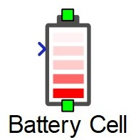
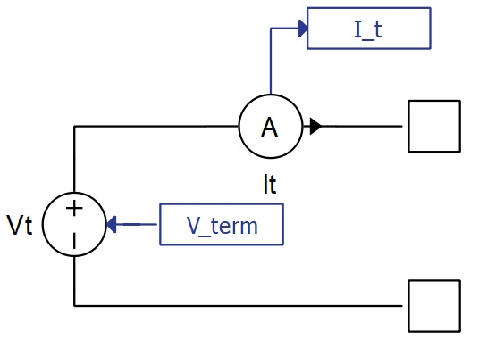
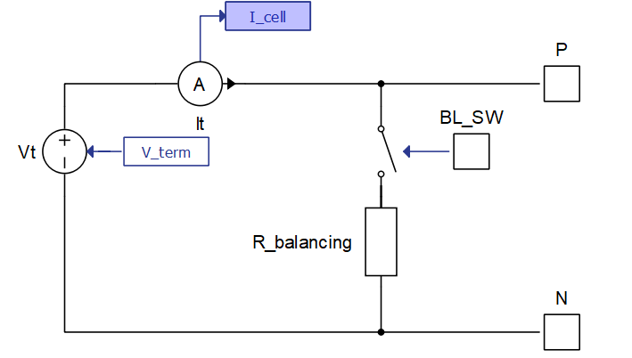
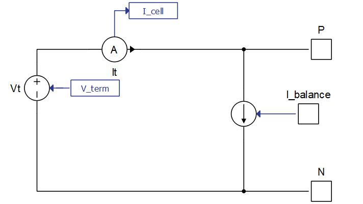

Battery Cell
Description of the Battery Cell component in Schematic Editor

Enhanced self correcting cell model
The Battery Cell model is implemented in Typhoon HIL Schematic using a controlled voltage source and a current measurement. The terminal voltage signal that controls the voltage source is a signal processing function of previous states and the measured current, using the Enhanced self-correcting cell model.
The component has two power electronics terminals, with a positive terminal on top and a negative terminal on bottom of the component (as shown in Figure 1). Additionally, there is another signal processing input which can be either a scalar input of cells temperature, or a vector input of the cell temperature followed by a balancing input. This is covered in more detail in Basic parameters (Tab) and Balancing circuit (Tab).
Short circuit of the cell can be simulated using the internal SCADA inputs of the component named Vcell Override and Vcell Value Set. When Vcell Override is set to 1, the terminal cell voltage of the component is bypassed and a new cell voltage matching the value of Vcell Value Set is assigned. Setting Vcell Override to 0 disables this feature.

Cell current is the current that is derived after subtracting the balancing current (if there is a balancing circuit enabled) from the total measured current (I_t in Figure 2).
The number of cells in parallel is modeled by dividing the cell current by the corresponding value in the parameter field. This method assumes that all the cells in the parallel configuration have equal parameters.
State of charge of the cell is calculated using the coulomb counting method with an adjustable coulombic efficiency coefficient:
Where is the total capacity parameter, is the cell current, and is the coulombic efficiency coefficient, which is applied only when the cell is being charged (otherwise its value is set to 1).
The initial state of charge can be set inside the Initial state of charge property. Additionally, in real time simulation, the state of charge can be overridden during the simulation by changing the State of Health SCADA input, SOH_set, inside of the Battery Cell component.
- Open circuit voltage (OCV) which represents the cell's terminal voltage when the diffusion process has subsided, there is no current flow, and the hysteresis effect is ignored. It is always a function of state of charge and optionally a function of temperature.
- Voltage drop on the internal resistance of the cell which is equal to the calculated internal battery cell resistance multiplied by the cell current (after balancing).
- Voltage drop due to chemical diffusion which is the effect of ion diffusion of battery cells. It can be modeled as a variable number of parallel resistor capacitor circuits connected in series. The order of these resistor capacitor circuits can theoretically go to infinity, but in practice, up to a third order is often sufficient. During charging or discharging the battery cell, the capacitors are polarized and will require time to discharge themselves when the current stops flowing through the battery.
-
Hysteresis effect voltage is important to replicate the state-of-the-art battery
cell behavior. Combining all of the previous components of terminal voltage to
accurately model the physical processes inside the battery cell is sometimes
insufficient. When measuring the voltage on the terminals of the cell, hysteresis
behavior of cell voltage in relation to cell current can be observed. One of the
analytical equations that can be used to describe this behavior, called One state
is described below:
Where:
,
M, M0, are user customizable parameters, and is a sign of the cell current.
Ports
- P (electrical)
- DC + port.
- N (electrical)
- DC - port.
- T (signal processing)
- If Balancing circuit is None, T is a scalar input of cells temperature
- If Balancing circuit is Passive, T is a two dimensional (vectorized) signal input. The first element of a vector is the cell temperature while the second element of the vector controls the BL_SW port of the balancing circuit shown in Figure 3.
- If Balancing circuit is Direct current input, T is a two dimensional (vectorized) signal input. The first element of a vector is the cell temperature while the second element of the vector controls I_balance port of the balancing circuit, shown in Figure 4.
Basic parameters (Tab)
- State of charge vector
- An array-like element and input into look up tables corresponding to other parameters inside this tab. It is the only mandatory field out of State of charge vector, Temperatures vector, and State of health vector for which at least one dimension of the Open circuit voltage vector look up table will be parametrized.
- Initial state of charge
- Sets the starting state of charge of the battery cell component in percentages.
- State of health vector
- An array-like element and input into look up tables corresponding to other parameters inside this tab. State of health vector is evaluated only in the case that other parameters in this tab have multidimensional arrays as inputs.
- Temperatures vector
- An array-like element and input into look up tables corresponding to other parameters inside this tab. Temperatures vector is evaluated only in the case that other parameters in this tab have multidimensional arrays as inputs. Temperature of the Battery Cell is provided by the signal processing input on the left side of this component.
- Open circuit voltage
- An array-like element representing the data points corresponding to State of charge vector with an optional temperature dependance.
- For the model to compile, the length of State of charge vector must be equal to the number of columns in Open circuit voltage vector.
- If the parameter Open circuit voltage vector contains a two dimensional array-like element, then the rows must correspond to values inside the Temperatures vector parameter. In that case, columns are still data points of State of charge vector and must be of the same length. There must also be the same number of rows as the length of State of charge vector.
- The output of the OCV is the linear interpolation between the provided points corresponding to the current state of charge (and temperature if a two dimensional array-like element is provided).
- Internal resistance
- The Internal resistance property can be constant, one dimensional array like element, or two dimensional array-like element.
- If a two dimensional array is provided, length of Temperatures vector must be equal to the number of columns in Internal resistance. There must also be the same number of rows as the length of State of health vector.
- If instead a one dimensional array is provided, the length of the Temperatures vector parameter will be the only dependance for calculating Internal resistance.
- A single value can also be provided for Internal resistance, in which case, no dependance is created and resistance is a constant value.
- Coulombic efficiency
- The Coulombic efficiency property can be constant, one dimensional array like element, or two dimensional array-like element.
- If a two dimensional array is provided, length of Temperatures vector must be equal to the number of columns in Coulombic efficiency. There must also be the same number of rows as the length of State of health vector.
- If instead a one dimensional array is provided, the length of the Temperatures vector parameter will be the only dependance for calculating Coulombic efficiency.
- A single value can also be provided for Coulombic efficiency, in which case, no dependance is created and Coulombic efficiency is a constant value.
- Number of cells in parallel
-
An integer, positive number that represents the amount of identical cells to be paralleled in the battery cell.
-
- Cell in series mode
-
Combo property with 2 options. Neither changes the cell behavior:
- Electrical Terminals is a default option. When selected, battery cell component operates as explained in the schematic diagram. Component has two electrical terminals and one signal input terminal as well as a signal controlled voltage source.
- Series pack interface option changes the interface of the component to a completely signal processing based. Electrical terminals are deleted and two new signal processing terminals are added. One is the current input which is the battery cell component terminal current, and the other is terminal voltage output, which is the output voltage of the battery cell component. This option deletes the signal controlled voltage source, making the battery cell completely signal processing based, reducing the FPGA resource utilization to zero.
-
- Nominal capacity
- The Nominal capacity combo box allows for parametrizing Battery Cell Total capacity by entering it directly or by calculating it from the available Discharge capacity. Choosing one option in this combo box will enable parameters corresponding to that option and disable parameters corresponding to the other option.
- Total capacity and Discharge capacity can each be constants, one dimensional array like elements, or two dimensional array-like elements. Using Total capacity as an example, if a two dimensional array is provided, length of Temperatures vector must be equal to the number of columns in Total capacity. There must also be the same number of rows as the length of State of health vector.
- If instead a one dimensional array is provided, the length of the Temperatures vector parameter will be the only dependance for calculating Total capacity.
- A single value can also be provided for Total capacity, in which case, no dependance is created and total capacity is a constant value. The same applies for the Discharge capacity parameter.
- Discharge capacity
- Available if Nominal capacity is set to Discharge capacity.
- Discharge capacity is the capacity that can be extracted from the fully charged battery with a particular constant current with a value of Discharge rate before it reaches the Minimum/cut-off voltage. Calculation is performed by including the effects of hysteresis (if enabled), diffusion voltage drop (if enabled), and the internal resistance voltage drop.
- Minimum/cut-off voltage
- Available if Nominal capacity is set to Discharge capacity.
- Discharge rate
- Available if Nominal capacity is set to Discharge capacity.
- Total capacity
- Available if Nominal capacity is set to Total capacity.
- Total capacity is the total amount of energy cell contains when fully charged. It is not possible to extract all this energy at any finite discharge current (it would take an infinite amount of time to extract it all), so cell capacities are not typically given in terms of maximum capacity, but it is a necessary parameter for State of Charge calculation.
- Execution rate
- The signal processing time step for calculating the cell terminal voltage based on previous states and the current input.
Diffusion process (Tab)
- Model order
- Model order is a combo box which enables or disables up to three parallel connected resistor capacitor circuits. Resistors and capacitors are only modeled if their respective properties are enabled. If the Model order option is different than None, the Temperatures vector for diffusion parameters and State of health vector for diffusion parameters properties are enabled and represent array-like data for two dimensional or one dimensional look up tables, depending on the resistor and capacitor parameter fields.
- Resistor 1
- Available if Model order is different than None.
- Represents the resistor value in ohms for the first RC circuit. Can be constant, single dimensional array (list) or a two dimensional array (nested list).
- Capacitor 1
- Available if Model order is different than None.
- Represents the capacitor value in farads for the first RC circuit. Input value(s) can be constant, single dimensional array (list) or a two dimensional array (nested list).
- Resistor 2
- Available if Model order is set to 2 or 3.
- Represents the resistor value in ohms for the second RC circuit. Can be constant, single dimensional array (list) or a two dimensional array (nested list).
- Capacitor 2
- Available if Model order is set to 2 or 3.
- Represents the capacitor value in farads for the second RC circuit. Input value(s) can be constant, single dimensional array (list) or a two dimensional array (nested list).
- Resistor 3
- Available if Model order is set to 3.
- Represents the resistor value in ohms for the third RC circuit. Can be constant, single dimensional array (list) or a two dimensional array (nested list).
- Capacitor 3
- Available if Model order is set to 3.
- Represents the capacitor value in farads for the third RC circuit. Input value(s) can be constant, single dimensional array (list) or a two dimensional array (nested list).
- Temperatures vector for diffusion parameters
- Available if Model order is different than None
- Array-like data for two dimensional or one dimensional look up tables, depending on the resistor and capacitor parameter fields.
- State of health vector for diffusion parameters
- Available if Model order is different than None
- Array-like data for two dimensional or one dimensional look up tables, depending on the resistor and capacitor parameter fields.
Each of these resistor and capacitor parameters can be constants, one dimensional array-like elements, or two dimensional array-like elements. Using Resistor 1 as an example, if a two dimensional array is provided, the length of Temperatures vector for diffusion parameters must be equal to the number of columns in Resistor 1, and there must be the same number of rows as the length of State of health vector for diffusion parameters. If instead a one dimensional array is provided, the length of Temperatures vector for diffusion parameters will be the only dependance for calculating Resistor 1. You can also provide a single value for Resistor 1, in which case no dependance is created and it is calculated as a constant value. The same applies for all other parameters of the diffusion voltage.
Voltage hysteresis (Tab)
- Hysteresis model
-
The Hysteresis model property allows you to select hysteresis effect implementation. Currently, only two implementations are allowed: None and One state.
-
If None is selected for the Hysteresis model property, voltage from hysteresis is always set to zero.
-
- Temperatures vector for hystersis parameters
- Available if Hysteresis model is set to One state.
- Represents array-like data for two dimensional or one dimensional look up tables, depending on the M parameter, M0 parameter, and Gamma parameter fields.
- State of charge vector for hystersis parameters
- Available if Hysteresis model is set to One state.
- Represents array-like data for two dimensional or one dimensional look up tables, depending on the M parameter, M0 parameter, and Gamma parameter fields.
- M0 parameter, M parameter, Gamma parameter
- Available if Hysteresis model is set to One state.
-
Each of these parameters can be constants, one dimensional array-like elements, or two dimensional array-like elements. Using M parameter as an example, if a two dimensional array is provided, the length of Temperatures vector for hysteresis parameters must be equal to the number of columns in M parameter, and there must be the same number of rows as the length of State of charge vector for hysteresis parameters. If instead a one dimensional array is provided, the length of Temperatures vector for hysteresis parameters will be the only dependance for calculating M parameter. You can also provide a single value for M parameter, in which case no dependance is created and it is calculated as a constant value. The same applies for M0 parameter and Gamma parameter.
Balancing circuit (Tab)
- Balancing circuit
- The Balancing circuit combo box allows you to select any of the three
following balancing circuits:
- None: No balancing circuit is introduced and the cell current is the total terminal current.
- Passive balancing: A new signal processing input is appended on the
Battery Cell component signal processing input, making it a two dimensional
(vectorized) signal input. The first component of this input remains the
temperature signal, while the second input controls the BL_SW port of the
balancing circuit. When the value of this second input is larger than 0.5, the
ideal switch shown in Figure 3 is closed. In this
case, the cell current used for calculating Battery Cell states and outputs is
the remainder of the difference of the terminal input current and the current
flowing through a balancing resistor. The value for the balancing resistor is
provided in the property Balancing parallel resistor.
Figure 3. Battery Cell model with passive balancing enabled 
- Direct input balancing: This option also modifies the signal processing
input of the Battery Cell component into a two dimensional vector input. The
second input signal is routed to the input port I_balance of the
balancing circuit, shown in Figure 4.
I_balance represents the value of the balancing current in amperes. In
this case, the cell current used for calculating Battery Cell states and outputs
is the remainder of the difference of the terminal input current and the input
balancing current.
Figure 4. Battery Cell model with direct input balancing enabled 
- The Balancing circuit combo box allows you to select any of the three
following balancing circuits:
- Balancing parallel resistor
- Available if Balancing circuit is set to Passive
- Resistance of the balancing resistor used when passive balancing circuit is enabled
Thermal model (Tab)
- Battery cell thermal model
- Battery cell thermal model checkbox enables/disables the thermal model of the battery cell(s). If thermal model is enabled, the input temperature will no longer be the cell(s) temperature and will instead become the ambient temperature input to a Thermal network component, modeled with equivalent thermal resistances and capacitances according to the Cauer thermal model. The power input to the thermal network is obtained from ohmic losses coming from internal resistance and resistances coming from diffusion modeling. If there are multiple parallel battery cells specified in Number of cells in parallel, ohmic losses are combined from all the cells in parallel and injected as a power loss for a single thermal model, whose output is the temperature for all the battery cells in parallel.
- Thermal resistance(s)
- Available if Battery cell thermal model is enabled.
- Thermal resistance(s) must be either a list of values or a single value. The number of elements must be the same as for the Thermal capacitance(s) parameter.
- Thermal capacitance(s)
- Available if Battery cell thermal model is enabled.
- Thermal capacitance(s) must be either a list of values or a single value. The number of elements must be the same as for Thermal resistance(s) parameter.
- Initial cell temperature
- Available if Battery cell thermal model is enabled.
- Initial cell temperature defines the initial temperature of the thermal network(s) in Celsius.
Measurements (Tab)
- State of health
- Enables/disables monitoring of Battery Cell state of health through a probe with the name SOH inside this component.
- State of charge
- Enables/disables monitoring of Battery Cell state of charge through a probe with the name SOC inside this component.
- Open circuit voltage
- Enables/disables monitoring of Battery Cell state of health through a probe with the name OCV inside this component.
- Internal resistance
- Enables/disables monitoring of Battery Cell state of health through a probe with the name Internal resistance inside this component.
- Total capacity
- Enables/disables monitoring of Battery Cell state of health through a probe with the name Total capacity inside this component.
- Balancing current
- Enables/disables monitoring of Battery Cell state of health through a probe with the name Balancing current inside this component.
- Cell current
- Enables/disables monitoring of Battery Cell state of health through a probe with the name Cell current inside this component.
- Temperature
- Enables/disables monitoring of Battery Cell state of health through a probe with the name Temperature inside this component.
- Hysteresis voltage
- Enables/disables monitoring of Battery Cell state of health through a probe with the name Hysteresis voltage inside this component.
- Diffusion voltage
- Enables/disables monitoring of Battery Cell diffusion voltage drop through a probe with the name Diffusion voltage inside this component.
- Emulator measured current
 This property is ignored in TyphoonSim.
Changing its value will not affect TyphoonSim simulation at all.
This property is ignored in TyphoonSim.
Changing its value will not affect TyphoonSim simulation at all.- Requires Enable Cell Emulator property to be activated.
- Enables/disables monitoring of the current measurement which is coming from the Cell Emulator hardware device (if properly connected and if enabled). Name of the measurement is Emulator current.
- Emulator measured voltage
- This property is ignored in TyphoonSim.
Changing its value will not affect TyphoonSim simulation at all.
- Requires Enable Cell Emulator property to be activated.
- Enables/disables monitoring of the voltage measurement which is coming from the Cell Emulator hardware device (if properly connected and if enabled). Name of the measurement is Emulator voltage.
- Emulator measured
temperature
- This property is ignored in TyphoonSim.
Changing its value will not affect TyphoonSim simulation at all.
- Requires Enable Cell Emulator property to be activated.
- Enables/disables monitoring of the temperature measurement which is coming from the Cell Emulator hardware device (if properly connected and if enabled). Name of the measurement is Emulator temperature.
Note: The Battery Cell component terminal current and voltage measurements are automatically enabled and can be monitored by selecting probes inside this component named It and Cell voltage.
Emulator (Tab)
- Enable Cell Emulator
- Available only if there is CAN FD support for the selected configuration.
- To properly use this functionality, the HIL device (offline simulation is not supported) must be properly connected to Cell Emulator channels.
- Enables/disables Cell Emulator interface in the battery cell component. When activated, this checkbox enables all other properties in this tab.
- Please read documentation on the Cell Emulator interface, which can be found in Emulator interface during simulation
- ID
- Requires Enable Cell Emulator property to be activated.
- Battery Cell component CAN FD protocol message ID. It must match the targeted Cell Emulator channel ID. Each Battery Cell must have a unique ID.
- Event frequency
- Requires Enable Cell Emulator property to be activated.
- Specifies frequency of sent messages. Maximum allowed value of this property depends on the number of Battery Cell components and other CAN or CAN FD components in the model. It is generally safe to use 100 Hz for most applications, but often times 1 Hz is enough.
- Synchronization phase delay
- Requires Enable Cell Emulator property to be activated.
- Dedicated time-slot in one event period for this particular component. If there are many components, to schedule them properly, each component should have a value of X/(number of Battery Cell components), where X represents the Xth Battery Cell component.
- Operation mode
- Requires Enable Cell Emulator property to be activated.
- Starting operation mode for voltage/current settings of the cell emulator control output. Default is Controlled Voltage Mode, representing voltage control output. To activate current control at the start of the simulation, change this property to Controlled Current Mode.
Emulator interface during simulation
When Enable Cell Emulator property is checked, a new subsystem named Cell Emulator will be created inside the Battery Cell component.
The Cell Emulator subsystem interfaces this component to one physical Cell Emulator channel via CAN FD communication. Each physical channel must have matching CAN ID with the component from the model and it must be powered and without indicated errors. Finally, a CAN FD setup component is needed to compile the model, and its baud rate must be set to 500K / 500K for the current Cell Emulator firmware.
There are multiple SCADA inputs inside Cell Emulator subsystem that can be accessed during runtime. These inputs are the connection between the Cell Emulator hardware device and the dedicated Battery Cell component with the matching ID. In normal operation, the Battery Cell terminal voltage calculated during runtime will be sent to adequate Cell Emulator channel terminals. There are multiple fault conditions, limits and applications, as well as requests for measurements or other actions from the Cell Emulator.
- REQUEST SCADA input manages the requests to the Cell Emulator. Depending on the
value, the Cell Emulator will respond to the request and will execute the requested
action
- REQUEST value is set to 0 - Nothing. Cell Emulator channel returns no value.
- REQUEST value is set to 1 - Calculated current. Cell Emulator channel will calculate the average current since the last request. The current that is being calculated is the current through the Cell Emulator channel terminals (typically the balancing current of the BMS). That current is then added to the terminal current of the connected Battery Cell inside the simulation, thus directly charging and discharging the modeled Battery Cell. This current can be observed through the Emulator current measurement, if its previously activated by the Emulator measured temperature property on the Battery Cell mask.
- REQUEST value is set to 2 - Measured current. Cell Emulator channel will simply output the last measured current upon receiving this request. The current that is being calculated is the current through the Cell Emulator channel terminals (typically the balancing current of the BMS). That current is then added to the terminal current of the connected Battery Cell inside the simulation, thus directly charging and discharging the modeled Battery Cell. This current can be observed through the Emulator current measurement, if its previously activated by the Emulator measured temperature property on the Battery Cell mask.
- REQUEST value is set to 3 - Measured temperature. Cell Emulator will return the measured temperature at that channel. This temperature can be observed through the Emulator temperature measurement, if its previously activated by the Emulator measured temperature property on the Battery Cell mask. The temperature can also be applied to the model with the Temperature source SCADA input.
- REQUEST value is set to 4 - Measured voltage. Cell Emulator will return the measured voltage at the connected channel. This voltage can be observed through the Emulator voltage measurement, if its previously activated by the Emulator measured voltage property on the Battery Cell mask.
- REQUEST value is set to 5 - Led ping. Cell Emulator will ping the white light at the connected channel. This functionality is useful for detecting the exact channel in setups where there are many such channels.
- REQUEST value is set to 6 - Calibration print. This request is reserved for the debugging processes during calibration. It is not intended to be used without official Typhoon HIL support.
- Fault conditions are all implemented as SCADA inputs and all have only two states, 1 for
on, 0 for off. Faults have different priorities so no two faults can be on at the same
time. Even though they are implemented as SCADA inputs, faults are all latched and require
resetting to unlatch.
- Fault Reset resets all faults in the Cell Emulator channel.
- Fault Open triggers an open wire fault between the BMS and the Cell Emulator channel.
- Fault Short triggers a short circuit fault on the Cell Emulator channel as well as on the connected Battery Cell component in the model.
- Fault Reverse polarity triggers the terminals of the Cell Emulator channel to switch its terminal polarity.
- AMP_RANGE SCADA input switches between two Cell Emulator channel current
measurement circuits.
- Value of 1 (default) sets high current measurement (+-1 A) with resolution of 15uA and maximum load of +-1 A
- Value of 0 sets low current measurement (+-10 mA) with resolution of 152nA and maximum load of +-10 mA
- Temperature source SCADA input changes source of temperature for the Battery Cell
model during runtime:
- Model (default) will select the temperature of this cell to be coming from a thermal model if enabled or simply from temperature signal processing input to this component.
- Emulator will select the source temperature of this cell to be an output of the Cell Emulator measurement. Calculations made will be based on the temperature which is received from the Cell Emulator channel, but only if the temperature measurement is properly requested.
- SCADA inputs RUN and STOP start and stop the Cell Emulator channel communication. Default condition is the running condition, meaning that the model will start sending messages to the Cell Emulator channel on the start of simulation.
- CONF_RESET SCADA input resets the configuration to the default initial values for all system bytes. The default initial values are specified in the Cell Emulator hardware documentation.
- APP represents the application purpose of the Cell Emulator channel. Depending on
the value of this SCADA input, the connected Cell Emulator channel will change its
behavior accordingly (if properly connected):
- APP value is set to 0 - normal operating mode. This is the default setting of this input and if it is selected, the model will send the Battery Cell voltage (or Forced_current value depending on the CVM_CCM input) to the connected Cell Emulator channel.
- APP value is set to 1 - Calibration mode. This mode is reserved for calibration and should not be initiated without official support from Typhoon HIL.
- APP value is set to 2 - Setting limit mode. When this mode is enabled the value from VOLTAGE_LIMIT SCADA input is continuously applied to the connected Cell Emulator channel. Changing VOLTAGE_LIMIT SCADA input alone will not change the limit until the APP SCADA input value is set to 2.
- CVM_CCM SCADA input can be either 1 or 0. Starting value is defined by the
Starting CVM_CCM bit:
- For the value of 1, voltage output control is enabled, meaning that the voltage of the battery cell will propagate to the connected Cell Emulator channel and set it's terminal voltage as the same value in Volts.
- For the value of 0, current output control is enabled, meaning that the Forced current property now controls the output of the connected Cell Emulator terminals. Instead of operating by controlling the voltage, it will now be a voltage controlled current output with the specified current.